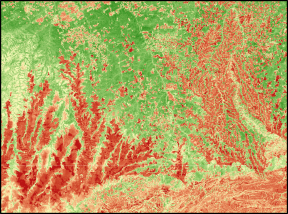
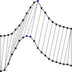
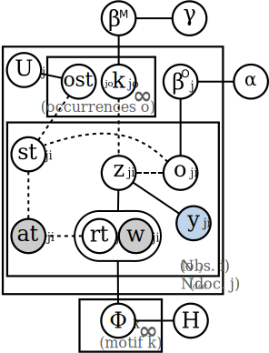
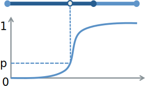
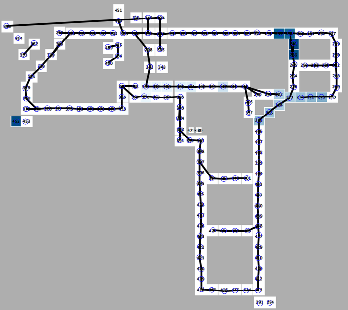

A lot of environmental data are timestamped.
Designing ML techniques that can handle this time dimension can often lead to much improved performance.
We have so far turned our focus on 2 different types of environmental data: chemistry data in streams and remote sensing data (such as satellite image time series).
Related funded projects
Related papers
Related dataset
- GEE-TSDA: a remote sensing dataset to evaluate domain adaptation on time series

This section gathers Machine Learning tools dedicated to time series with no specific focus on environmental data.
Related papers
Related source code

We have been using time-sensitive topic models (such as Probabilistic Latent Semantic Motifs or Hierarchical Dirichlet Latent Semantic Motifs) to perform action recognition in videos.
We are still investigating the design of richer models to better capture information from streams of numerical features.
Related papers

Our main goal in this project was to introduce new indexing schemes that were able to efficiently deal with time series.
One contribution in this field was iSAX+, an approximate-lower-bound-based indexing scheme for DTW.
Some works about vector data indexing are also cited here.
Related papers

The growing use of lots of low-level sensors instead of few higher-level ones implies the use of dedicated pattern extraction methods.
To do so, we have worked on the already existing T-patterns algorithm so that it can efficiently scale up to larger volumes of data.
Related papers